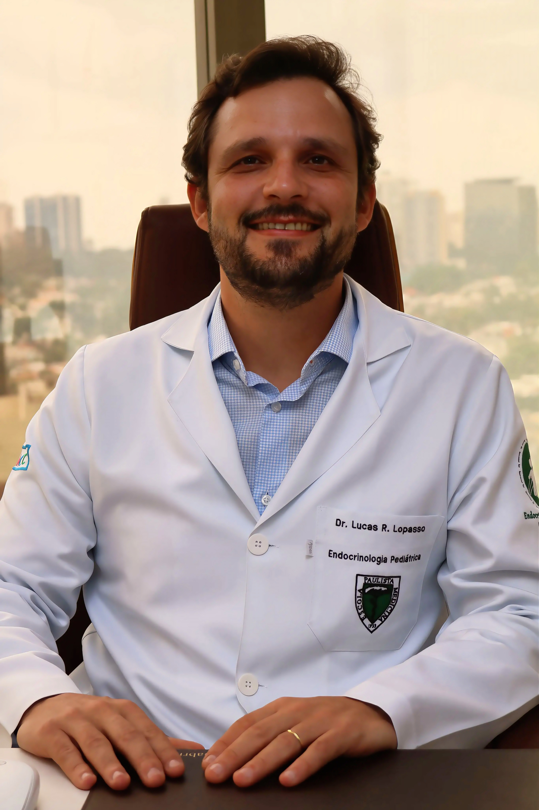

Endocrinologia Pediátrica · Alphaville · São Paulo · Americana
Endocrinologista pediátrico para o crescimento do seu filho
Dr. Lucas Lopasso acompanha crianças e adolescentes em consultas de crescimento e estatura, puberdade, peso, tireoide, diabetes e colesterol. Formação em Pediatria e Endocrinologia Pediátrica pela Escola Paulista de Medicina (UNIFESP).
Atendimento particular. Resposta pelo WhatsApp em horário comercial.

Quando procurar
Sinais que merecem avaliação especializada
-
01
Sempre o menor da turma
Criança que está entre as menores da sala ou que saiu da própria curva de crescimento.
-
02
Puberdade fora de hora
Sinais puberais antes dos 8 anos nas meninas ou dos 9 nos meninos. Ou ausência deles aos 13 e 14 anos.
-
03
Ganho de peso acelerado
Mudança rápida na curva de peso, com ou sem alteração nos exames de rotina.
-
04
Cansaço e queda de rendimento
Sintomas persistentes que o pediatra pediu para investigar do ponto de vista hormonal.
Áreas de atuação
O que é acompanhado na consulta
-
Crescimento e estatura
Leitura da curva, ritmo de crescimento, baixa estatura e previsão de altura dentro do canal familiar.
-
Puberdade
Puberdade precoce, puberdade atrasada e acompanhamento do estirão em meninos e meninas.
-
Peso e obesidade infantil
Avaliação metabólica e plano possível para a rotina da família, sem dieta restritiva e sem culpa.
-
Tireoide
Hipotireoidismo, hipertireoidismo e alterações de tireoide detectadas em exames de rotina.
-
Diabetes
Acompanhamento de diabetes na infância e na adolescência junto com a família.
-
Colesterol
Alterações de colesterol e do perfil metabólico em crianças e adolescentes.
Sobre o médico
Da economia à endocrinologia pediátrica
Depois de me formar em Economia nos Estados Unidos, encontrei na medicina o propósito de cuidar e estar próximo das pessoas.
Fiz minha residência em Pediatria e a especialização em Endocrinologia Pediátrica na Escola Paulista de Medicina (UNIFESP). Hoje, uno ciência e minha paixão pelo esporte para acompanhar o crescimento e o desenvolvimento de crianças e adolescentes.
Atendo em São Paulo, Alphaville e Americana, com um olhar próximo, cuidadoso e individualizado.
A primeira consulta
Sem pressa e sem jargão
-
01
Escuta e história
A gestação, o nascimento, o ritmo de crescimento até aqui, a altura dos pais e o que fez vocês procurarem.
-
02
Exame e medidas
Altura, peso, proporções corporais e estágio puberal, plotados nas curvas de referência na frente de vocês.
-
03
Exames, se fizerem sentido
Idade óssea, laboratório ou hormônios. Apenas o que pode mudar a conduta.
-
04
Plano e acompanhamento
Uma explicação que a família entende, uma conduta clara e um retorno combinado.
Leve a caderneta de saúde da criança, exames anteriores e, se possível, as alturas do pai e da mãe.
Onde atendo
Três unidades no estado de São Paulo. O endereço completo e os horários da unidade escolhida são enviados no agendamento.
-
Barueri · SP
Alphaville
Atende também Santana de Parnaíba, Tamboré, Aldeia da Serra, Osasco, Cotia e Granja Viana. Agendar em Alphaville → -
São Paulo · SP
São Paulo
Atende também Itaim Bibi, Vila Olímpia, Moema, Brooklin, Jardins e Pinheiros. Agendar em São Paulo → -
Americana · SP
Americana
Atende também Santa Bárbara d’Oeste, Nova Odessa, Sumaré e a região de Campinas. Agendar em Americana →
Dúvidas frequentes
Qual a diferença entre o pediatra e o endocrinologista pediátrico?+
O pediatra cuida da saúde da criança como um todo e acompanha o dia a dia. O endocrinologista pediátrico é o pediatra que se especializou nos hormônios, os mesmos que comandam o crescimento, a puberdade, o peso, o metabolismo e a tireoide. Os dois trabalham juntos.
A partir de que idade meu filho pode ser avaliado?+
Qualquer idade, do recém-nascido ao adolescente. Quanto mais cedo um desvio de crescimento ou de puberdade é identificado, mais opções de conduta existem, porque a janela de crescimento tem prazo.
Quais sinais indicam que devo procurar avaliação?+
Criança que está sempre entre as menores da turma ou que saiu da própria curva; roupas e sapatos que ficam pequenos rápido demais; sinais puberais antes dos 8 anos nas meninas ou dos 9 nos meninos; ausência de sinais puberais aos 13 anos nas meninas ou aos 14 nos meninos; ganho de peso acelerado; cansaço persistente.
O esporte faz a criança crescer mais?+
O esporte faz parte de um desenvolvimento saudável, mas não é ele que define sozinho a altura final. Na avaliação entram a curva de crescimento, a fase da puberdade, a idade óssea, o sono, a alimentação, a altura dos pais e a carga de treino adequada para a idade.
O que devo levar na primeira consulta?+
A caderneta de saúde da criança, que é o registro mais valioso que existe, exames anteriores, o cartão de vacinas e, se possível, as alturas do pai e da mãe.
Onde o Dr. Lucas Lopasso atende?+
O atendimento acontece em Alphaville, em Barueri, com acesso fácil para quem vem de Santana de Parnaíba, Tamboré, Aldeia da Serra, Osasco e Granja Viana; em São Paulo; e em Americana, no interior. O endereço completo e os horários de cada unidade são enviados no agendamento.
Atende por convênio?+
O atendimento é particular. Ao final da consulta é emitido recibo para solicitação de reembolso junto ao seu plano, conforme as regras de cada operadora.
Vamos conversar
O crescimento do seu filho não espera
Se você notou algum sinal ou tem dúvida sobre a curva, o primeiro passo é uma conversa. Mande uma mensagem e a secretaria retorna com os horários disponíveis.
Endocrinologista pediátrico em Alphaville, São Paulo e Americana
O consultório em Alphaville atende famílias de Barueri, Santana de Parnaíba, Tamboré, Aldeia da Serra, Osasco, Cotia e Granja Viana. Há também atendimento em São Paulo e em Americana, no interior. Consultas de endocrinologia pediátrica para avaliação de crescimento e baixa estatura, puberdade precoce ou atrasada, obesidade infantil, alterações da tireoide na infância, diabetes, colesterol e acompanhamento do jovem atleta em fase de crescimento.